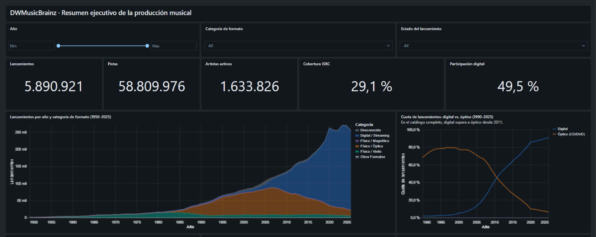
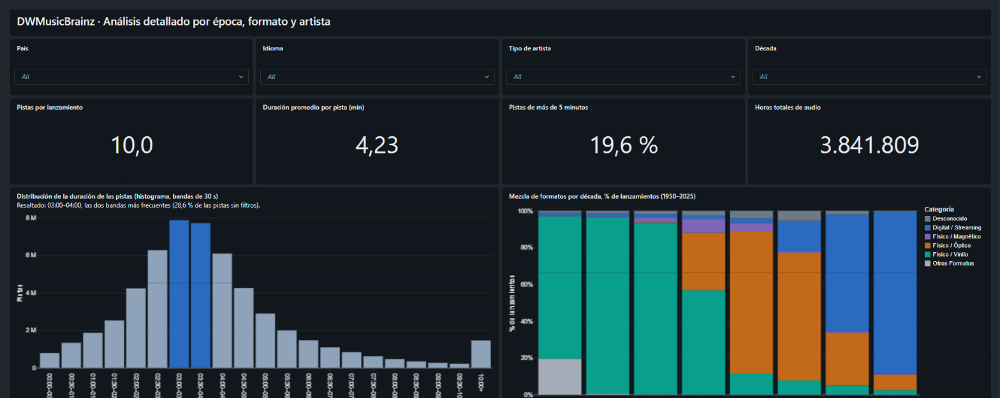
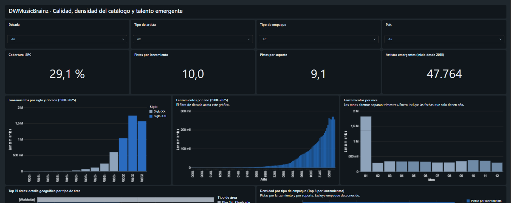
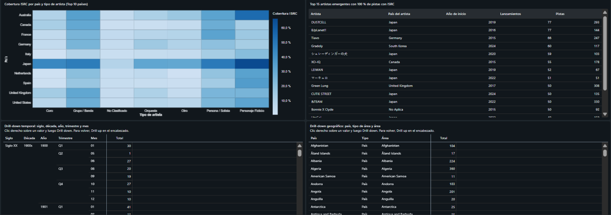

DWMusicBrainz
Un Data Warehouse de 58,8 millones de pistas reales: lote con Spark y Delta Lake, tiempo real con Kafka y Spark Structured Streaming.
Juan Rincón · Sebastián Russo · Jesús Figueroa
Docente: Amilkar Sierra Romano · Ingeniería de Sistemas · Valledupar, 2026
Qué vamos a ver hoy
01 · El problema
Requisito, objetivos y por qué cambiamos de plataforma.
02 · Arquitectura
Medallón, estrella de Kimball, lote y streaming.
03 · Spark y Kafka
Cómo se procesan 58,8 M de filas y eventos en vivo.
04 · Proceso y calidad
Seis pasos, 116 reglas bloqueantes y errores corregidos.
05 · Resultados
Lo que dicen los datos: formatos, duración, países, ISRC.
06 · Cierre
Dashboard, límites honestos y próximos pasos.
El proyecto en tres cifras
fact_pista, por encima de los 50 M exigidosMensaje central. El mismo modelo en estrella procesa ahora el catálogo completo, con conteos conciliados contra el origen, y se complementa con una capa de streaming que recibe lanzamientos nuevos en tiempo real.
El problema
Un requisito de volumen, objetivos medibles y un cambio de plataforma.
Qué nos propusimos y cómo lo medimos
Objetivo general. Construir un Data Warehouse sobre el catálogo completo de MusicBrainz que integre procesamiento por lotes y en tiempo real, para analizar la producción musical por año, formato, país, idioma y artista.
| Objetivo específico | Meta medible | Resultado |
|---|---|---|
| Cargar el volcado completo en lote | > 50 M de registros reales | 58,8 M de pistas |
| Modelar Medallón + estrella de Kimball | 3 capas, grano declarado | 3 hechos · 7 dimensiones |
| Ingerir eventos en tiempo real | Kafka → Spark Streaming → BD | Capa de velocidad en Docker |
| Garantizar la calidad del dato | 0 reglas bloqueantes fallidas | 116 de 116 aprobadas |
| Responder RF01 a RF08 | Dashboard con drill-down | 3 páginas · AI/BI |
De 15 M a 58,8 M de pistas
Solo track tenía tope
TARGET_ROWS dejaba 15 M de 58,8 M de pistas.
Silver ya era grande
98,6 M de filas entre todas sus tablas.
El hecho estaba agregado
2,97 M de filas por su grano diario, no por falta de datos.
Python solo orquestaba
El trabajo pesado lo hacía PostgreSQL en un nodo.
Cambió la plataforma, no el modelo
| Función | Entrega anterior | Ahora |
|---|---|---|
| Plataforma | PostgreSQL local | Databricks Free Edition |
| Motor | Un solo nodo | Apache Spark serverless |
| Almacenamiento | Tablas PostgreSQL | Delta Lake + Unity Catalog |
| Orquestación | Script de Python | Lakeflow Jobs |
| Tiempo real | No existía | Kafka + Spark Structured Streaming |
| Visualización | Power BI | Dashboard AI/BI en Databricks |
Arquitectura
Dos caminos que terminan en el mismo modelo: lote y tiempo real.
Arquitectura Lambda: lote + velocidad
Medallón: cada capa tiene una promesa
etl_audit y data_quality_log registran cada etapaUna estrella con siete dimensiones
Gold tiene dos niveles de grano
fact_pista
—Una fila por pista: el detalle atómico.
fact_produccion_musical
—Día × artista × perfil × área × formato × idioma.
fact_distribucion_duracion
—Año × formato × idioma × área × banda de duración.
Lanzamiento — · Shakira
- — pistas → — filas en fact_pista
- — soportes distintos
- Solo 1 fila cuenta el lanzamiento
- — pistas con ISRC
Así la suma de lanzamientos nunca se duplica.
Cada tecnología responde a una necesidad
Databricks
Spark administrado sin operar un clúster.
Apache Spark
PySpark, Spark SQL y Structured Streaming.
Apache Kafka
Bus de eventos durable, particionado y reproducible.
Delta Lake
ACID e historial: comparamos versiones con time travel.
Unity Catalog
Gobierno de tablas y Volumes; DBFS está deprecado.
Lakeflow Jobs
DAG de 8 tareas sin servidor de orquestación.
PostgreSQL 16
Destino transaccional del streaming con UPSERT.
Dashboard AI/BI
Consume Gold en la nube, sin importar datos.
Alternativas evaluadas
| Alternativa | Por qué se descartó |
|---|---|
| PostgreSQL local | Un solo nodo, disco limitado y sin práctica distribuida |
| Spark local | 13,8 GB de RAM y Java 8: muy justo para este volumen |
| DuckDB | Probablemente alcanza, pero no es procesamiento distribuido |
| Snowflake · Redshift · Fabric | Pruebas temporales; BigQuery sandbox limita a 10 GB |
| RabbitMQ · Kinesis | RabbitMQ no reproduce el historial; Kinesis exige cuenta de pago |
| Hadoop y Hive | Exigen operar un clúster; ecosistema más pesado |
Aclaración honesta. 58,8 M de filas no es un volumen extremo y no medimos PostgreSQL contra Spark con los mismos datos. Spark fue una decisión del proyecto, no una conclusión de rendimiento.
Spark y Kafka
El motor de lote y el bus de eventos, en el código real.
Un DAG de ocho tareas en Lakeflow
Broadcast joins
Las dimensiones pequeñas viajan a cada ejecutor y evitan el shuffle.
min(struct)
Primera pista por grupo sin ordenar cada partición con ROW_NUMBER.
Liquid clustering
CLUSTER BY (fecha_key, artista_key) en el hecho.
Así se construye el hecho de 58,8 M de filas
Kafka → Spark Structured Streaming → BD
Si algo se cae, nada se duplica
Productor idempotente
acks=all y enable.idempotence: un reintento no duplica mensajes.
Clave por lanzamiento
El MBID fija la partición y conserva el orden por lanzamiento.
Dead letter queue
Los eventos mal formados van a otro tópico con su motivo, sin detener el flujo.
Checkpoints
Spark guarda offsets y estado: al reiniciar sigue donde quedó.
UPSERT idempotente
ON CONFLICT hace que reprocesar un lote no duplique filas.
Watermark
Acepta eventos tardíos dentro del margen y libera el estado viejo.
La capa de velocidad, ejecutada
Proceso y calidad
Primero reducir el riesgo, después construir, al final validar.
Del volcado a Gold en seis pasos
Descarga
SHA-256 correcto y 11 tablas extraídas.
Carga
track dividida en 8 bloques por el límite de 5 GiB.
Capacidad
Prueba con todas las pistas antes de construir.
Pipeline
Bronze, Silver, Gold, validación y job.
Correcciones
Catálogos oficiales y desempate por país.
Dashboard
3 páginas AI/BI revisadas en el navegador.
La prueba despejó la duda principal
Sin confirmar
No se midió cuánta cuota diaria de Free Edition consumió la prueba.
Pipeline completo en 10 min 33 s
A tener en cuenta
Bronze reutilizó 9 tablas de la prueba de capacidad; solo cargó area y language.
Cómo se comprobó el resultado
pruebas con datos pequeños: primero en rojo, luego en verde.
reglas bloqueantes aprobadas, entre Silver y la validación final.
pistas iguales en volcado, Bronze, Silver y Gold.
Año y Década del dashboard coinciden exactamente con SQL.
Errores hallados y corregidos
| Error | Corrección | Se detectó por |
|---|---|---|
| Columnas de medium invertidas | Orden real del volcado | Inspección de archivos |
| Etiquetas heredadas erróneas | Catálogos oficiales y regla V08 | Inspección, no por reglas |
| Desempate por menor ID de país | Regla nueva y validación V12 | Inspección, no por reglas |
| Límite de 5 GiB al subir track | 8 bloques de 1 GB | Error de la CLI |
| Año 0 en el filtro | Fila sin fecha fuera del rango | Revisión visual |
| Resultados en caché | Actualización forzada | Revisión en el navegador |
Las reglas iniciales revisaban integridad, no significado: por eso dos errores pasaron.
Afghanistan: un dato raro era un error
Causa
En cada empate de fecha entre países ganaba el menor ID, y Afghanistan es el 1.
| Países empatados | Regla nueva | Lanzamientos |
|---|---|---|
| 10 o más | Pasa a [Worldwide] | — |
| 2 a 9 | País con más lanzamientos | — |
| [Worldwide] entre los empatados | Se conserva [Worldwide] | — |
Lo que dicen los datos
Con el catálogo completo, varias conclusiones anteriores cambiaron.
Las cifras cambiaron con todos los datos
| Métrica | Carga de 15 M | Volcado completo |
|---|---|---|
| Pistas | — | — |
| Lanzamientos | — | — |
| Soportes | — | — |
| Correlación año–duración 1950–2025 | +0,89 | +0,917 |
| Correlación año–duración 2013–2025 | −0,57 | −0,343 |
| Digital supera a óptico | — | — |
La carga de 15 M seguía el orden del archivo: no era una muestra aleatoria.
Digital supera a óptico en —
La duración típica está entre 3 y 4 minutos
El acortamiento reciente es débil
- Con 13 años, |r| debe superar 0,553 para ser significativo al 5 %.
- La hipótesis de canciones más cortas por el streaming no queda demostrada.
- Pearson usa medias anuales: mide asociación, no causalidad.
El mayor bloque no es un país
Solo — de las pistas tiene ISRC
Tres páginas en Databricks AI/BI



Drill-down y filtrado cruzado
- Temporal: década → año → trimestre → mes.
- Geográfico: país → tipo de área → área.
- Un clic en un gráfico filtra los demás.
- Paleta validada para daltonismo y contraste.

Lo que este trabajo no resuelve
Datos
- Fechas anteriores a 1900 van a «sin fecha»
- — pistas con años futuros
- Calidad y categorías: criterio propio
Dashboard
- Drill-down hasta mes, no hasta día
- Top N no se recalcula con filtros
- Power BI queda en la entrega anterior
Sin medir
- PostgreSQL contra Spark
- Beneficio del liquid clustering
- Streaming solo local, un broker
Lo que nos llevamos
- Requisito cumplido: 58.809.976 pistas reales y conciliadas.
- Lote y tiempo real conviven sobre el mismo modelo.
- Los resultados corrigen conclusiones de la entrega anterior.
- Validar integridad no basta: también el significado.
Próximos pasos
- Llevar el streaming a Databricks con Kafka gestionado
- Completar la jerarquía geográfica
- Medir PostgreSQL contra Spark
- Medir el liquid clustering
¿Preguntas?
Código, pipeline, dashboard y esta presentación están en el repositorio del proyecto.